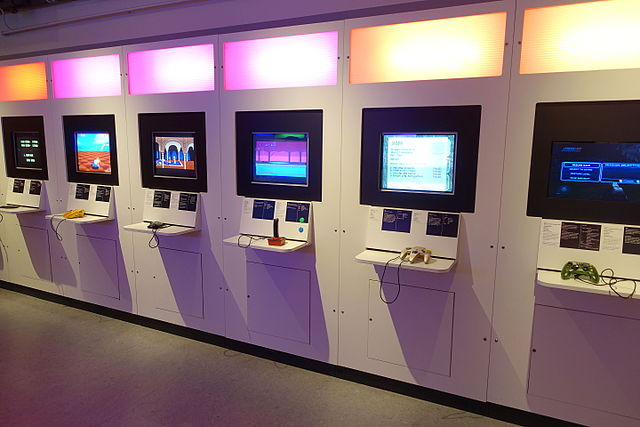
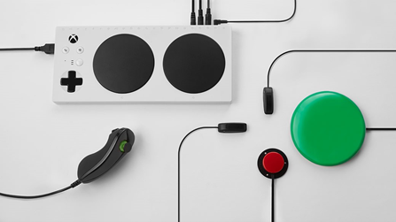
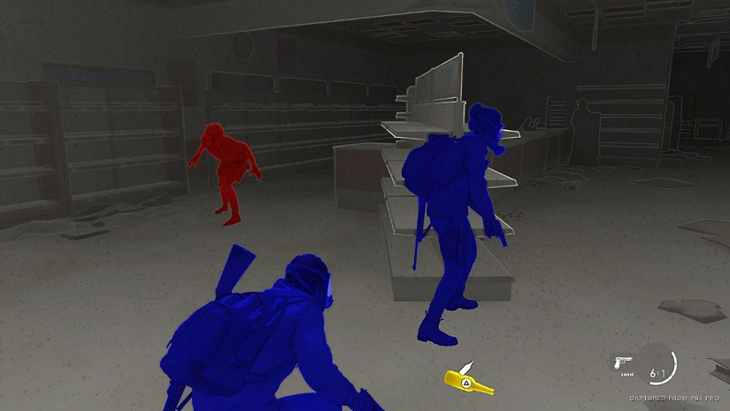

Accessibility in Gaming
An important concept in making video games user friendly for people with disabilities or limited mobility is to not just make accessible video games easy, but to easily make video games accessible. Some professionals in the gaming industry have equated gaming accessibility to the presence of an easy mode. However, merely creating an easy mode and deciding that there are enough accessibility settings in a game is not acceptable and confuses the goals of accessibility in video games. Unfortunately, this mindset has existed in the gaming industry for quite some time and shows a lack of familiarity and understanding regarding what players with disabilities or limited mobility need in order to have a good gaming experience. 3 Every player has unique needs that cannot be met by an easy mode. Game developers need to consider a variety of design factors and mechanics when working to make their respective video games accessible to people with disabilities and limited mobility. However, the responsibility for making gaming accessible does not sit only with game developers, but also with the corporations responsible for making gaming hardware.

A variety of features in the gaming experience that have to be advocated for when making gaming accessible to people with disabilities or limited mobility include:
Adaptive Gaming Controllers
Adaptive gaming controllers are a great way to make playing video games more accessible and fun for people with disabilities or limited mobility. These types of controllers are different in physical layout versus a standard controller, but can perform the same input commands. This enables the player to have the same in-game experience using the technical features included in an adaptive controller. Throughout the history of gaming, adaptive controllers were usually created by third-party companies who saw the need for this type of equipment in gaming spaces. 2 Today there are many different companies creating a variety of products that can be used to change the controls of a console and fit the needs of people with a disability or limited mobility.
 Xbox Adaptive Controller being used with external devices, Image credit to Microsoft
A significant moment in the history of adaptive controllers and accessible gaming was the release of the Xbox Adaptive Controller, which was the first ever first-party adaptive controller created by the console manufacturer itself. 1 This controller was created through a collaborative process between Microsoft and a number of different nonprofits from across the globe. 3 The Xbox Adaptive Controller is likely the most customizable controller to ever exist, with every controller button being reprogrammable to fit the individual user’s needs. 1 External assistive devices can also be plugged into the Adaptive Controller to further ensure that every user, regardless of disability is able to have an enjoyable gaming experience without compromising the characteristics of the game itself. Sony and Nintendo have not released adaptive controllers themselves for their respective consoles. Microsoft creating this type of controller was an important step in the gaming industry in bringing awareness to the needs of people with disabilities or limited mobility, so that everyone can have fun gaming. Having a purchase price of only $100 with availability to buy at any Microsoft store makes the controller both easily affordable and readily available in a way that has not been possible with previous third-party adaptive controllers.
Advocating for accessibility in gaming
There are a number of organizations currently advocating for accessibility in video games and working to ensure that people with disabilities or limited mobility are included in the gaming space. The AbleGamers Foundation is an American based nonprofit that “creates opportunities that enable play in order to combat social isolation, foster inclusive communities, and improve the quality of life for people with disabilities.” AbleGamers works with the gaming industry to build more inclusive and accessible design for upcoming games, so that settings and features can be changed to meet the individualized needs of a person with a disability. Special Effect, a UK based nonprofit is also working to build inclusivity and equality in the gaming space through technology. Warfighter Engaged is a volunteer nonprofit “with a mission to improve the lives of severely wounded and disabled warfighters through custom adapted devices.” These nonprofit organizations are doing significant, groundbreaking work to improve both the user experience and the game development process. Through the collaboration between disabled gamers, nonprofits, and game developers-publishers, a set of guidelines and recommendations have been created that can help to create an accessible, beneficial video game playing experience for people with disabilities and limited mobility. 6 People wanting to get involved in advocating for and supporting accessibility in the video game space can become involved in nonprofit gaming organizations along with directly expressing a need for inclusive game design to video game developers and publishers.
Examples of accessible/user friendly video game development
While many video game developers and publishers have not designed their games to be accessible or simply put in an easy mode, there are some gaming companies that have gone above and beyond to make their games accessible. In 2014 Borderlands 2 added a colorblind mode through a patch to the game, which was a direct result of the gaming community rallying for its inclusion. 3 In 2016, Uncharted 4 had a very inclusive user experience that allowed for a wide range of changes both in game and control based. Perhaps the biggest achievement in the history of gaming accessibility is The Last of Us 2, which was released in 2020. Included in the game are more than 60 different accessibility settings that can be changed to make sure that every gamer has a good experience that fits their unique needs. 7 Every aspect of the gaming experience was covered in the accessibility settings for The Last of Us 2, which include vision, audio and motor features of the game, along with button remapping and a wide range of in game control changes that can be made. 8 One of the most well know settings is the high contrast mode, shown in the screenshot below. This graphical setting allows visually impaired gamers to play in a way that has never been possible before. 7
 Image credit to Sony
The Last of Us 2 stands as a testament to how accessible and customizable a game can be when the developers are dedicated to taking the time to make the features available for players to use. Gaming companies should look to this game for inspiration on how to best make their game accessible and inclusive for people with disabilities or limited mobility.